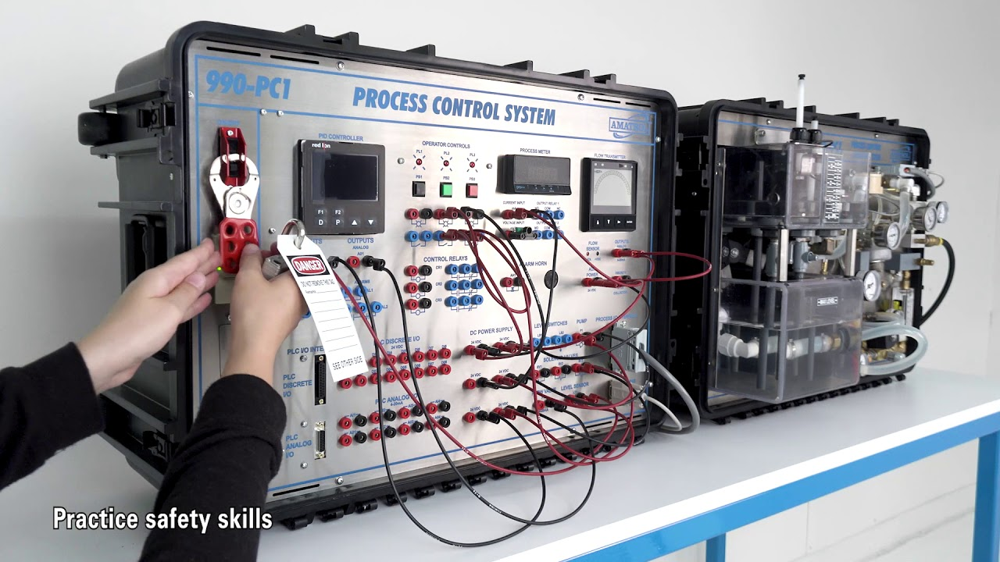

Info Tech Calibration Services is an accredited body as per ISO/IEC 17025:2017 by the National Accreditation Board
for Testing & Calibration Laboratories (NABL) for both testing and calibration.
The most dependable method for updating and maintaining accurate instrument readings is process instrument calibration. Such process instrument calibration also aids in reducing various mistakes. In order to ensure precise measurements from multiple process instruments, our organisation undertook calibration procedures. For the correct calibration, our business and laboratory are outfitted with the most cutting-edge machinery and testing supplies. Since we are the leading provider of process instrument calibration services in Bhiwadi, NCR, we never offer our clients a reason to be dissatisfied. By utilising the most recent technology, we provide the best services for Process instrument calibration.
